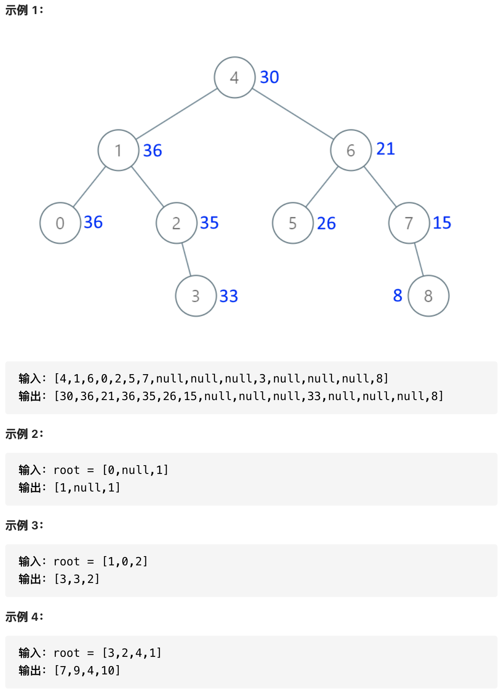

0538-convert binary search tree to greater tree
问题描述
给定二叉搜索树的根节点，该树节点值各不相同。将其转换为累加树(Greater Sum Tree)，使每个节点node的新值等于原树中大于或等于node.val的值之和。

提示:
- 树中节点数介于
0和104之间。- 每个节点的值介于-104和104之间。
- 树中所有值互不相同。
- 给定的树是二叉搜索树。
代码
逆中序遍历，DFS实现
# Definition for a binary tree node.
# class TreeNode:
# def __init__(self, val=0, left=None, right=None):
# self.val = val
# self.left = left
# self.right = right
class Solution:
cumsum = 0
def convertBST(self, root: TreeNode) -> TreeNode:
self.DFS(root)
return root
def DFS(self, root: TreeNode) -> None:
if not root: return 0
self.DFS(root.right)
root.val += self.cumsum
self.cumsum = root.val
self.DFS(root.left)